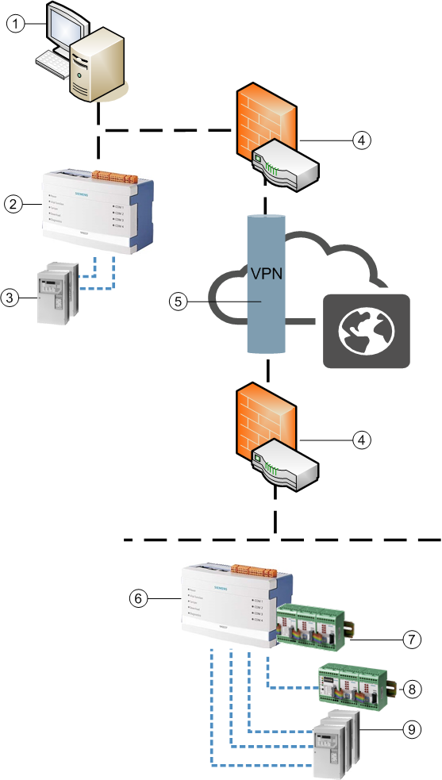

NK823x System Architecture
The NK823x Ethernet Port is a BACnet gateway that can integrate legacy DMS panels over serial connections and provide Desigo CC with a BACnet/IP connectivity over local and remote networks.
NK823x units can also support onboard I/O lines and local DF8000 I/O modules.

| Description |
1 | Management station |
2 | Local NK823x Ethernet Port |
3 | Local DMS subsystems (see the compatibility list) |
4 | Router with Firewall |
5 | Virtual Private Network (VPN) on a Public Network |
6 | Remote NK823x Ethernet Port |
7 | DF8000 I/O via I2C |
8 | DF8000 I/O via serial line |
9 | Remote DMS subsystems (see the compatibility list) |
| BACnet/IP Ethernet |
Serial connections |

NK8000 Security
To ensure the system security and prevent physical damages and attacks that may compromise the system integrity and confidentiality, make sure to install NK823x units according to the following criteria:
- NK823x units must be updated to latest Kernel and firmware versions.
- NK823x units must be installed in locked cabinets (for example, a control panel housing or the dedicated NE8001 cabinet).
- Cabinets must be installed in locked rooms with constant surveillance and restricted access to authorized personnel only.
- The BACnet protocol, used between the NK823x units and the system, is an open and unprotected protocol. Therefore, the NK823x networks must be protected from unauthorized data access, use, disclosure, disruption, modification, and destruction. This concerns all networks that are somehow vulnerable due to external connections (WAN, Internet), open technologies (wireless networks), or any other risk of fraudulent access.
To achieve the required level of security, the protective measures must include: - The use of firewalls on the Intranet to filter external traffic and select the allowed ports.
NOTE: The list of ports used by Desigo CC can be found in the System Description. - The use of Virtual Private Networks (VPN) or other equivalent solutions to establish a secure (encrypted) tunnel between the NK823x LAN and the management station across public or unprotected networks.
- In the NK823x unit download, the secure (default) option must be selected. Do not use the FTP modes. For more information, see Configuration Download.